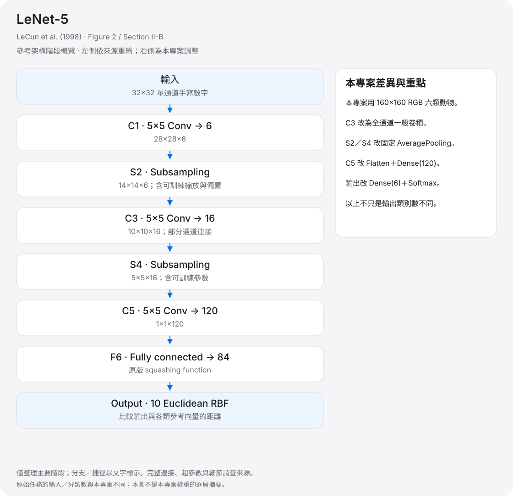
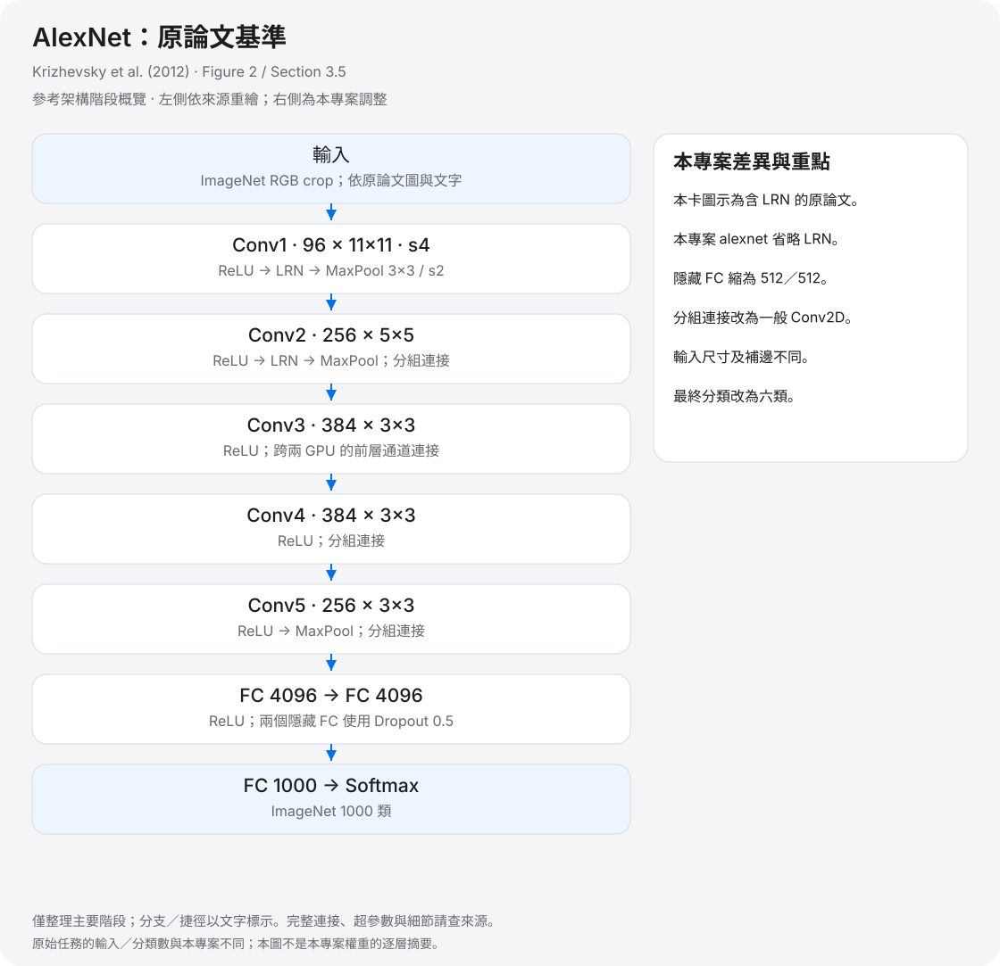
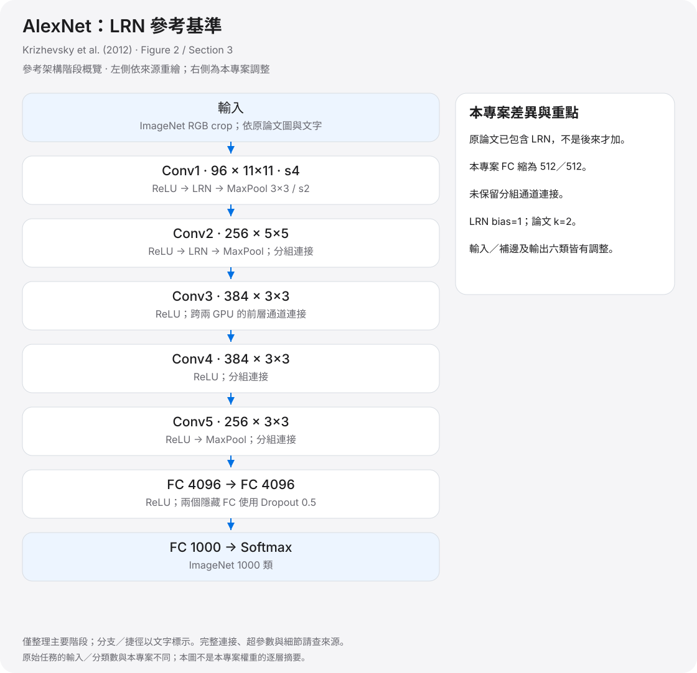
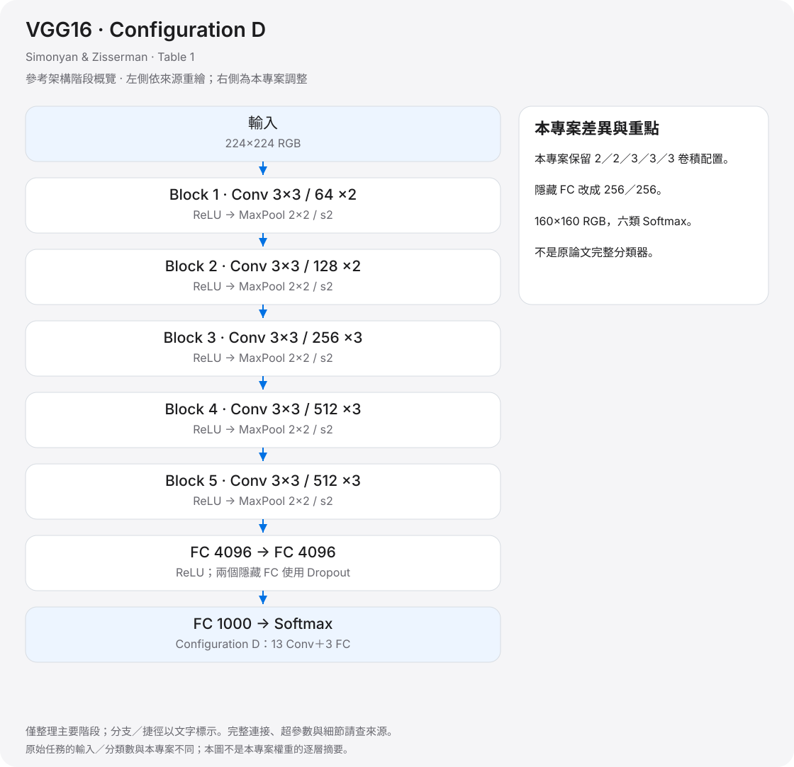
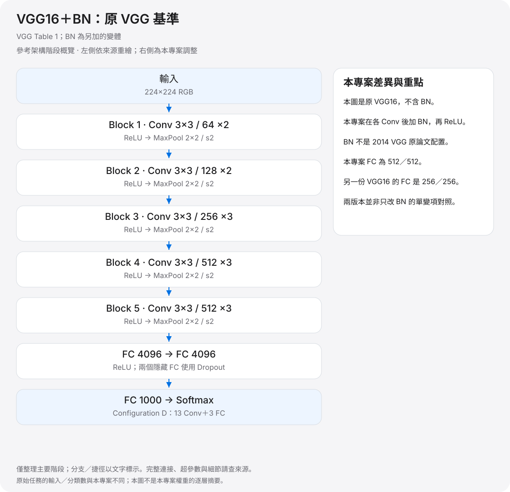
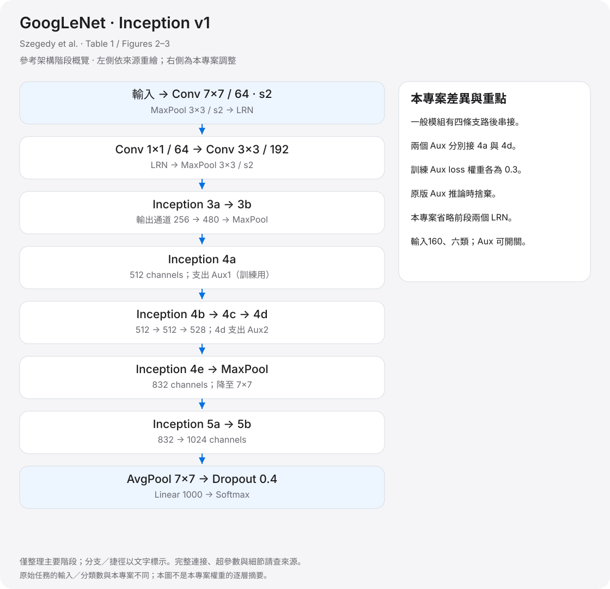
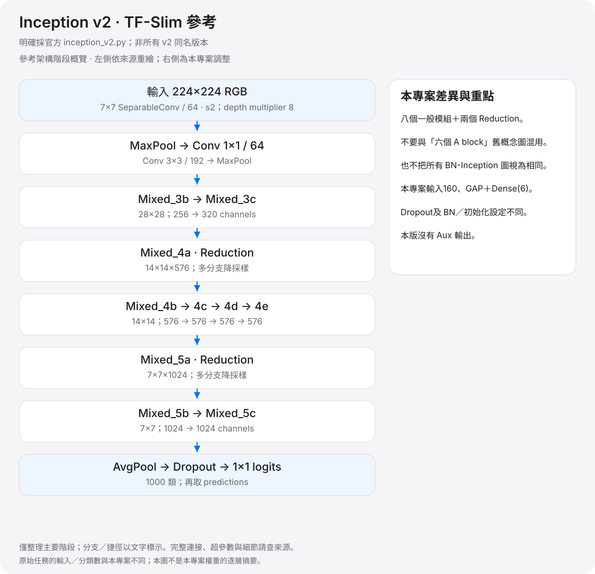
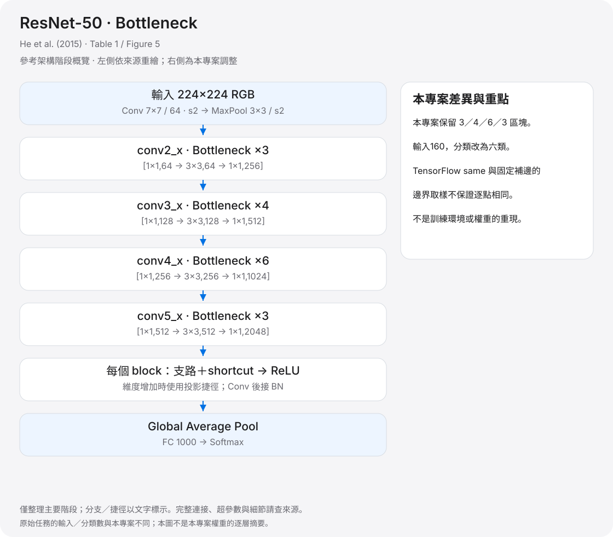
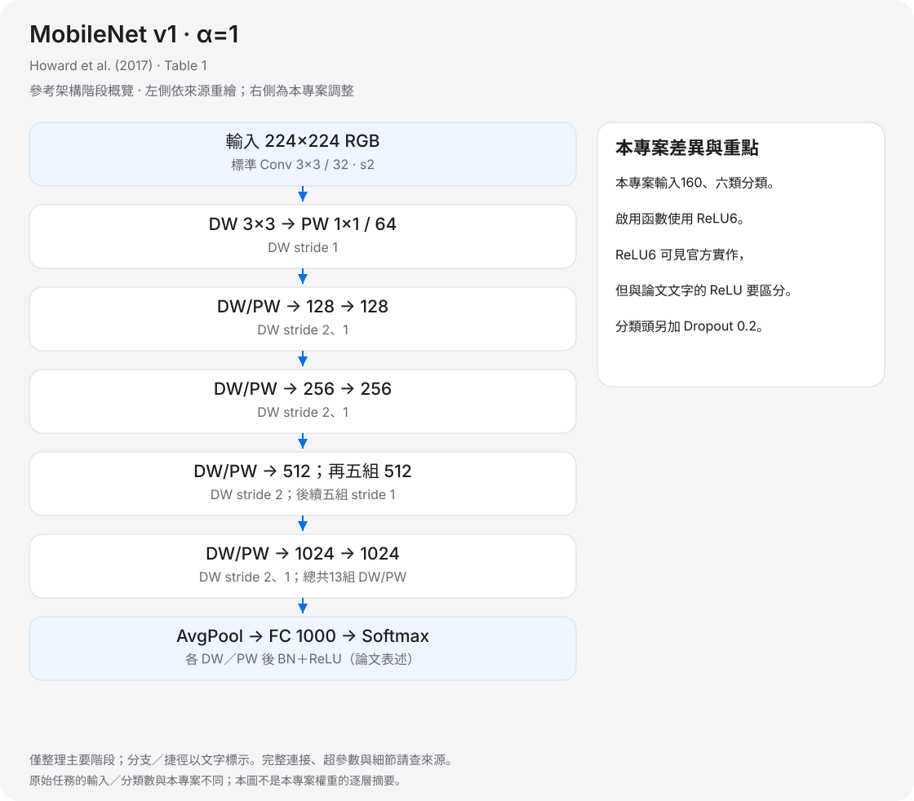
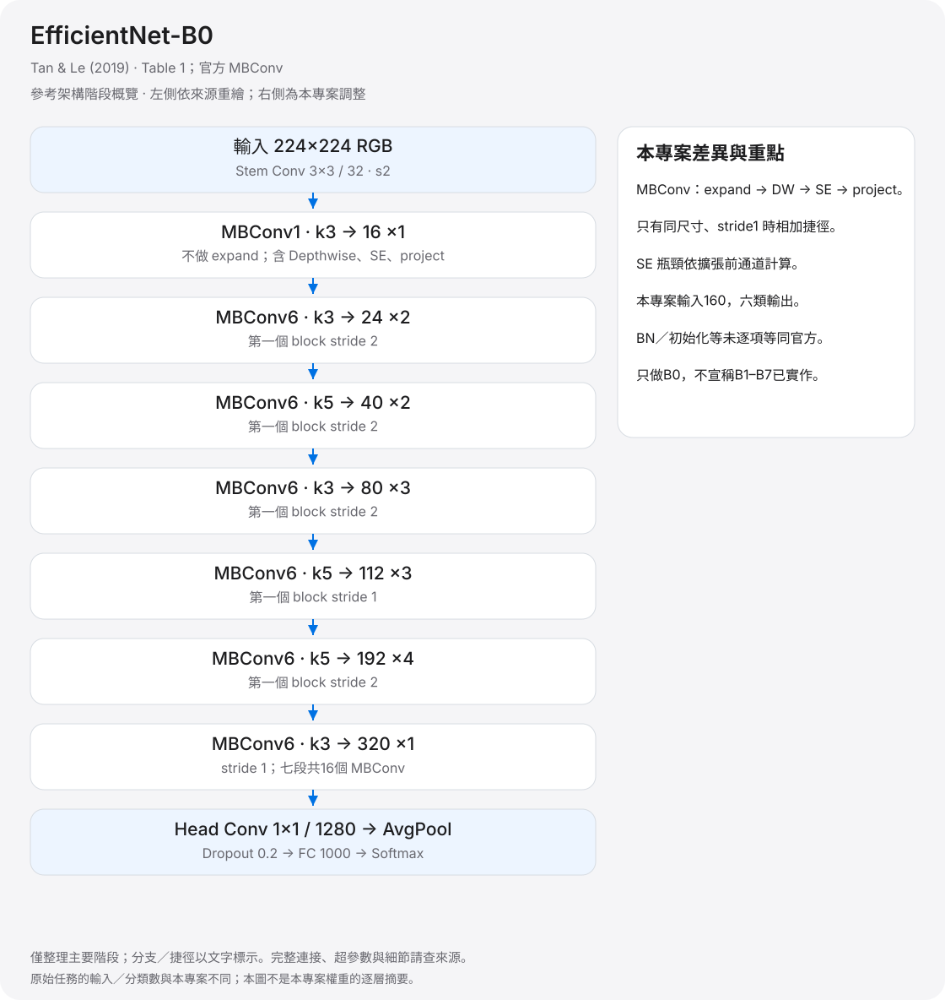

LeNet
小型卷積與平均池化，作為入門基準。

點圖可放大。圖依原論文／官方參考重繪；本專案調整見下方差異。查看架構來源
模型特色與論文架構差異
原版 C3 為部分通道連接，目前使用一般 Conv2D；原版 subsampling 含可訓練縮放與偏置，目前為固定平均池化；C5 改用 Flatten＋Dense(120)，在目前輸入尺寸下不等同原卷積；RBF 輸出改為 Softmax。論文
離線閱讀版 · 與 CNN Lab 模型介紹頁籤共用風格
回專案說明從核心設計理解模型，再搭配曲線與分類指標觀察。圖示以原論文或明確的官方參考版本為準；本專案是六類分類學習實作，仍有架構調整，部分差異較大，請展開各卡片核對。
小型卷積與平均池化，作為入門基準。

點圖可放大。圖依原論文／官方參考重繪；本專案調整見下方差異。查看架構來源
原版 C3 為部分通道連接，目前使用一般 Conv2D；原版 subsampling 含可訓練縮放與偏置，目前為固定平均池化；C5 改用 Flatten＋Dense(120)，在目前輸入尺寸下不等同原卷積；RBF 輸出改為 Softmax。論文
大卷積核、ReLU 與 Dropout。

點圖可放大。圖依原論文／官方參考重繪；本專案調整見下方差異。查看架構來源
隱藏全連接層為 512／512，原版為 4096／4096；原版第 2、4、5 層的分組連接改為一般卷積；省略 LRN。論文
加入局部反應正規化，與無 LRN 版本對照。

點圖可放大。圖依原論文／官方參考重繪；本專案調整見下方差異。查看架構來源
同樣縮小為 512／512，且未使用原版分組連接。LRN 的 bias=1 與論文 k=2 不同，這一項屬層內超參數差異。論文
連續堆疊 3×3 卷積。

點圖可放大。圖依原論文／官方參考重繪；本專案調整見下方差異。查看架構來源
卷積配置對應原版 configuration D；兩個隱藏全連接層縮為 256／256，原版為 4096／4096。論文 Table 1
加入 Batch Normalization；分類器大小也與本專案 VGG16 不同，並非只差 BN。

點圖可放大。圖依原論文／官方參考重繪；本專案調整見下方差異。查看架構來源
隱藏全連接層為 512／512。BN 是原 VGG 的擴充設計，並非 2014 VGG 論文原版。VGG 論文
Inception v1 多分支、1×1 降維與輔助分類器。

點圖可放大。圖依原論文／官方參考重繪；本專案調整見下方差異。查看架構來源
主要 Inception 配置大致對應，但前段省略原版兩個 LRN 層；池化的空間尺寸隨輸入尺寸調整。論文
BN、多分支、卷積分解與降採樣。

點圖可放大。圖依原論文／官方參考重繪；本專案調整見下方差異。查看架構來源
對齊 TF-Slim 的可分離卷積前段、八個一般區塊與兩個 Reduction，共十個模組；保留本專案 GAP、六類輸出、BN／初始化與 Dropout 強度，不宣稱逐點重現原訓練。參考實作
Bottleneck 與殘差捷徑。

點圖可放大。圖依原論文／官方參考重繪；本專案調整見下方差異。查看架構來源
Depthwise 與 Pointwise 卷積，降低計算量。

點圖可放大。圖依原論文／官方參考重繪；本專案調整見下方差異。查看架構來源
MBConv、SE 通道權重與條件式殘差。

點圖可放大。圖依原論文／官方參考重繪；本專案調整見下方差異。查看架構來源
SE 縮減寬度依區塊輸入通道計算；殘差支路使用逐樣本遮罩，丟棄率依 block_idx／total_blocks 增加。保留本專案 BN 與初始化設定，不要求原論文環境或訓練方法。參考實作